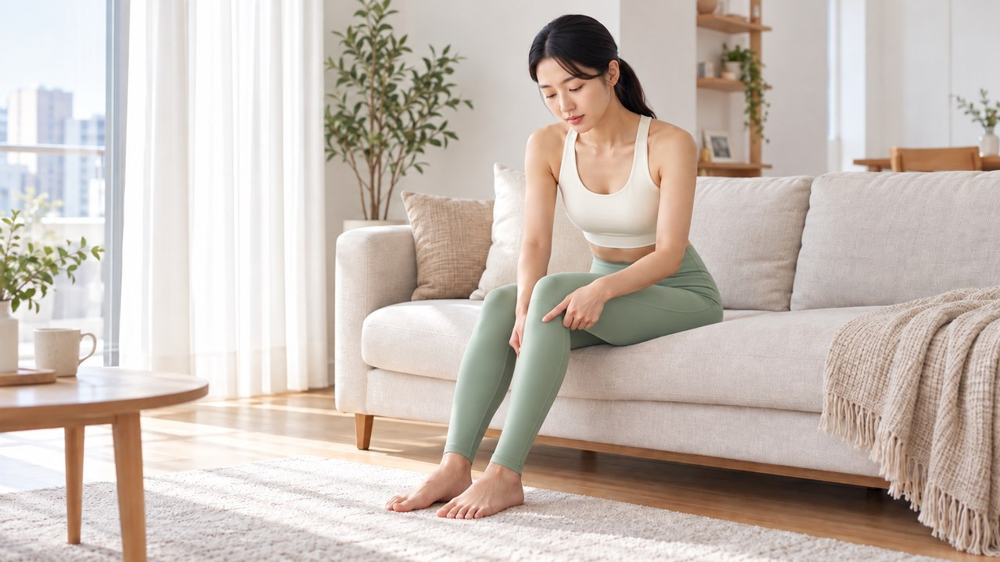
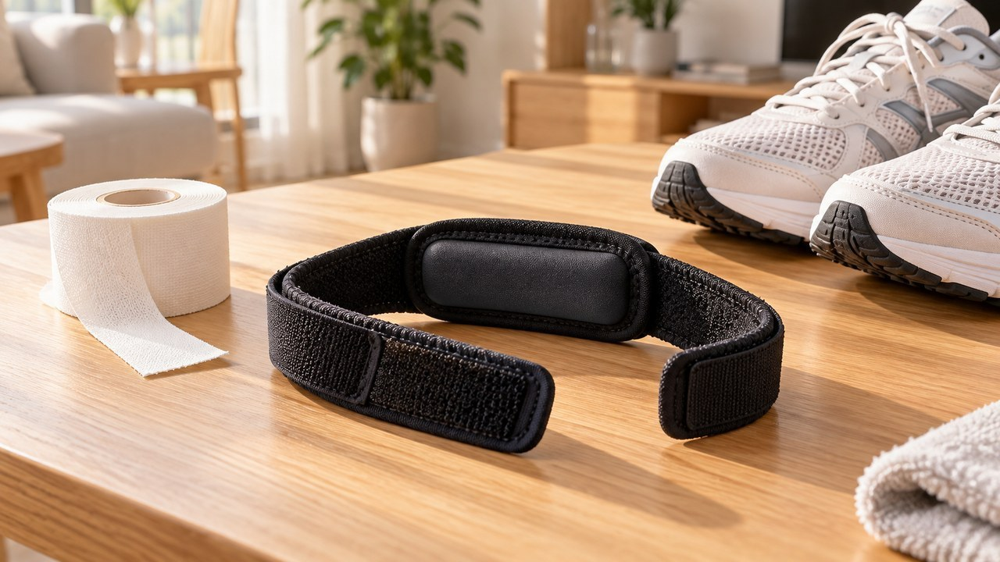
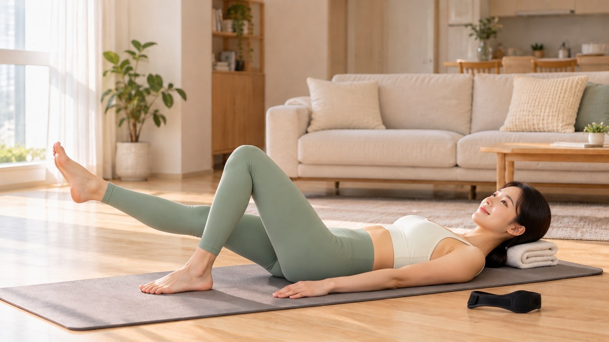
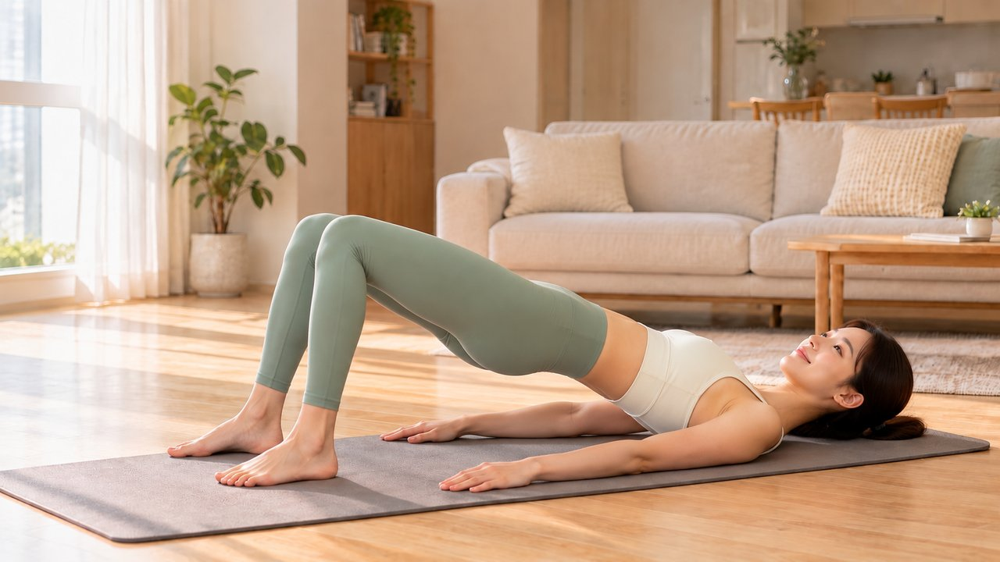

"달리기할 때 얇은 띠 보호대 하나면 충분하겠지?" 근력 운동 빼고 보호대만 믿으면 무릎 약해지는 이유
선선한 저녁 공기를 마시며 공원을 달리고 나면
유독 무릎뼈 바로 아랫부분이 시큰거릴 때가 있습니다.
계단을 내려갈 때마다 찌릿한 느낌이 올라와서
얇은 띠 모양의 러닝 무릎보호대를 찾아보신 적 있으시죠?
막상 끈을 조여 감아주면 당장은 발걸음이 한결 가벼워지니
근력 운동은 미뤄둔 채 보호대에만 의지하기 쉽습니다.
하지만 보조기는 달리는 동안 부담만 잠시 덜어줄 뿐이어서
하체 운동을 빼먹거나 아예 쉬기만 하면 무릎이 더 약해집니다.
게다가 띠형 보호대를 무릎뼈 정중앙에 감으면 오히려 마찰이 커져
무릎뼈 바로 아래 오목한 힘줄 자리에 맞춰 차는 것이 중요합니다.


달리기 뒤에 찾아오는 앞무릎 불편감은 크게
무릎뼈 뒤편이 묵직한 슬개대퇴통증증후군과
아래쪽 힘줄이 콕콕 쑤시는 슬개건염 2가지로 구분됩니다.
이럴 때 아픈 부위라며 무릎뼈 한가운데를 조이면 관절이 더 뻑뻑해집니다.


의자에 앉아 무릎을 살짝 굽히고 동그란 무릎뼈 바로 밑을 만져보세요.
정강이뼈 위쪽 사이에 손끝이 쏙 들어가는 말랑한 힘줄이 느껴집니다.
바로 이 오목한 슬개건 자리에 밴드의 도톰한 패드를 대어주면
착지할 때 힘줄이 위아래로 과하게 잡아당겨지는 부담이 줄어듭니다.
또한 발이 땅에 닿는 순간 고관절이 안으로 돌아가거나
무릎이 안쪽으로 꺾이는 흔들림까지 안정적으로 잡아줍니다.
밴드가 땀에 차서 갑갑한 날에는 스포츠테이핑이나 무릎테이핑으로
무릎뼈 아랫부분을 부드럽게 받쳐주셔도 좋습니다.


보호대를 차고 뛰었을 때 한결 편안해졌다고 해서
무릎이 다 나았다고 생각하면 큰 오산입니다.
보호대와 테이프는 달리는 동안 충격을 덜어주는 단기 보조 수단일 뿐
약해진 하체 근육을 대신 만들어주지는 못하기 때문입니다.

연골은 무리하게 써도 상하지만 적절한 자극이 너무 없어도 약해지며
지나친 휴식으로 안 움직이면 허벅지 주변 근육이 쉽게 빠집니다.
무릎이 조금 시큰거린다고 몇 주 동안 걸음마저 멈춰버리면
관절을 지탱하던 근육이 줄어들고 움직임도 더 굳어집니다.
급한 통증이 가라앉으면 이튿날 무리가 없는 선에서 평지 산책이나
실내 자전거처럼 부담이 적은 운동으로 건강한 자극을 이어가세요.


무릎을 지킨다며 앞허벅지 운동만 고집하는 것도 반쪽짜리 습관입니다.
달릴 때 무릎이 안쪽으로 무너지지 않으려면 골반과 엉덩이 옆 근육이
양쪽 다리의 균형을 탄탄하게 붙잡아주어야 하기 때문입니다.
한쪽 엉덩이 근육이 약하면 착지할 때마다 한쪽 무릎으로 충격이 쏠립니다.
게다가 뒷벅지가 뻣뻣하게 굳어 있고 힘이 부족하면 무릎을 펼 때
뒤쪽에서 저항이 걸려 앞무릎에 가해지는 압력이 훨씬 커집니다.

그러니 보호대에만 기대지 말고 평소 무릎을 펴는 앞허벅지 힘주기,
옆으로 누워 다리를 들어 올리는 엉덩이 근육(고관절 외전근) 운동,
그리고 뻣뻣하게 굳은 뒷벅지를 늘려주는 스트레칭과 근력 보강까지
3가지 부위를 양쪽 다리 균형에 맞춰 꾸준히 단련해 보세요.

달린 직후 무릎이 부어오르고 열기가 느껴질 때는 차가운 냉찜질로 달래주고
부기 없이 묵직하고 뻣뻣할 때는 15분 안팎 온찜질로 부드럽게 풀어주세요.
다만 당뇨 등 평소 혈관 건강이 약한 경우에는 찬 찜질을 할 때 혈관이 수축해
혈류 장애가 생길 수 있으니 조심하셔야 합니다.
여러분은 달릴 때 띠형 스트랩과 스포츠테이핑 중 어떤 방식을 더 자주 쓰시나요?
아니면 운동 전후로 뒷벅지 스트레칭부터 챙기시나요? 댓글로 편하게 남겨주세요 😊

1. 국가건강정보포털 (KDCA) — 무릎 관절 보존적 관리(보조기·테이핑, 저부하 유산소·근력·유연성 운동, 온·냉찜질 관리 기준) 지침 (cntnts_sn=1988)
2. Sports Health (2011) — 성인 남성 무릎 굴곡 부하 실험에서 슬개건 스트랩 착용 시 슬개건 각도(PPTA) 및 국소 변형률 감소 분석 (PMID: 23016021 / PMCID: PMC3445162)
3. Knee (2017) — 슬개건염 대상자 단기 외발 착지 실험에서 슬개건 스트랩 착용에 따른 평균 통증 척도 및 하지 정렬 안정화 연구 (PMID: 28551203)
4. Current Reviews in Musculoskeletal Medicine (2020) — 앞무릎 통증 2가지 주요 원인(슬개대퇴통증증후군·슬개건염)에서 보조기·테이핑의 단기 보조 역할 및 근력 재활 근거 (PMID: 32500350)
5. Journal of Sport and Health Science (2024) & PLoS One (2024) — 점진적 무릎 불편 증상 메타분석 뒷벅지 기능 및 슬개대퇴통증 아마추어 러너 고관절·허벅지 근력 대칭성 연구 (PMID: 37669706, PMID: 38857250)
#러닝무릎보호대 #러닝무릎보호대위치 #러닝무릎보호대효과 #스포츠테이핑 #무릎테이핑 #무릎앞쪽통증 #슬개건염 #달리기무릎통증 #하체근력운동 #뒷벅지스트레칭 #에디터혀니 #혀니의꿀단지